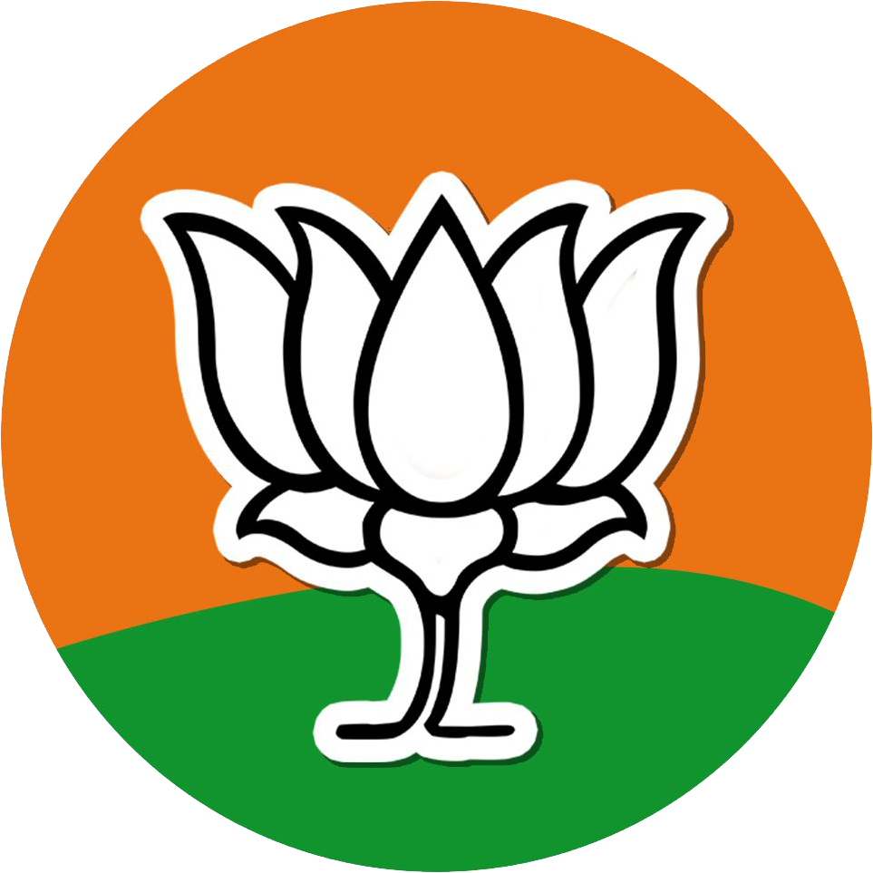

Narendra Damodardas Modi
17 September 1950
Bharatiya Janata Party 
Narendra Damodardas Modi born (17 September 1950) is an Indian politician who is serving as the 14th Prime Minister of India since May 2014. Modi was the Chief Minister of Gujarat from 2001 to 2014 and is the Member of Parliament (MP) for Varanasi. He is a member of the Bharatiya Janata Party (BJP) and of the Rashtriya Swayamsevak Sangh (RSS), a right wing Hindu nationalist paramilitary volunteer organisation. He is the longest-serving prime minister from outside the Indian National Congress.
Modi was born and raised in Vadnagar in northeastern Gujarat, where he completed his secondary education. He was introduced to the RSS at the age of eight. His account of helping his father sell tea at the Vadnagar railway station has not been reliably corroborated. At age 18, he was married to Jashodaben Modi, whom he abandoned soon after, only publicly acknowledging her four decades later when legally required to do so. Modi became a full-time worker for the RSS in Gujarat in 1971. The RSS assigned him to the BJP in 1985 and he held several positions within the party hierarchy until 2001, rising to the rank of general secretary.
In 2001, Modi was appointed Chief Minister of Gujarat and elected to the legislative assembly soon after. His administration is considered complicit in the 2002 Gujarat riots, and has been criticised for its management of the crisis. A little over 1,000 people were killed, according to official records, three-quarters of whom were Muslim; independent sources estimated 2,000 deaths, mostly Muslim. A Special Investigation Team appointed by the Supreme Court of India in 2012 found no evidence to initiate prosecution proceedings against him. While his policies as chief minister, which were credited for encouraging economic growth, were praised, Modi's administration was criticised for failing to significantly improve health, poverty and education indices in the state. In the 2014 Indian general election, Modi led the BJP to a parliamentary majority, the first for a party since 1984. His administration increased direct foreign investment, and it reduced spending on healthcare, education, and social-welfare programmes. Modi began a high-profile sanitation campaign, controversially initiated the 2016 demonetisation of high-denomination banknotes and introduced the Goods and Services Tax, and weakened or abolished environmental and labour laws.
Bibliographies
- Modi, Narendra (2004). Aapaatkaal Mein Gujarat (in Hindi) (Samskarana 1 ed.). New Delhi: Prabhat Prakashan.
- (2011). Convenient Action: Gujarat's Response to Challenges of Climate Change. New Delhi: Macmillan Publishers India.
- (2015). Social Harmony. Prabhat Prakashan.
- (2015). Jyotipunj (in Hindi). Prabhat Prakashan.
- (21 December 2015). India's Singapore Story. ISEAS–Yusof Ishak Institute.
- (2017). Mann Ki Baat: A Social Revolution on Radio. BlueKraft Digital Foundation.
- (22 April 2014). A Journey: Poems by Narendra Modi. Translated by Manthi, Rajiv.
- (3 February 2018). Exam Warriors. Penguin India.
- (2018). Abode of Love. Rajpal Publishers.
- (2020). Letters to Mother [Saakshi Bhaav]. HarperCollins.
- (2018) [2017]. President Pranab Mukherjee: A Statesman. Translated by Joshi, Varun. The Statesman.
- Bal Narendra: Childhood Stories of Narendra Modi. Rannade Prakashan. 2014